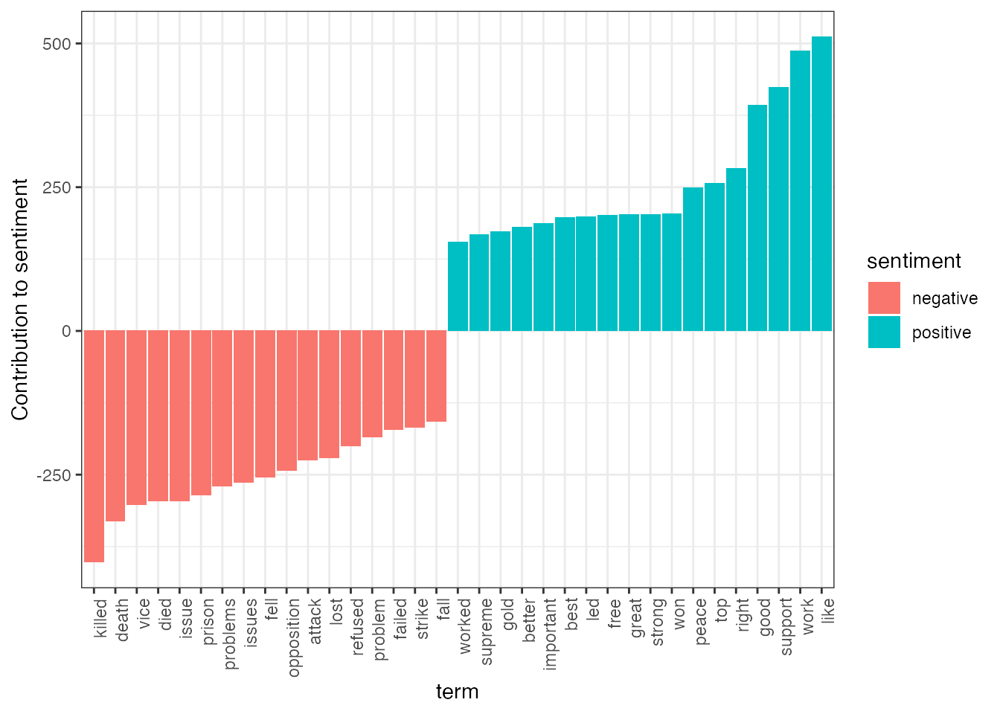
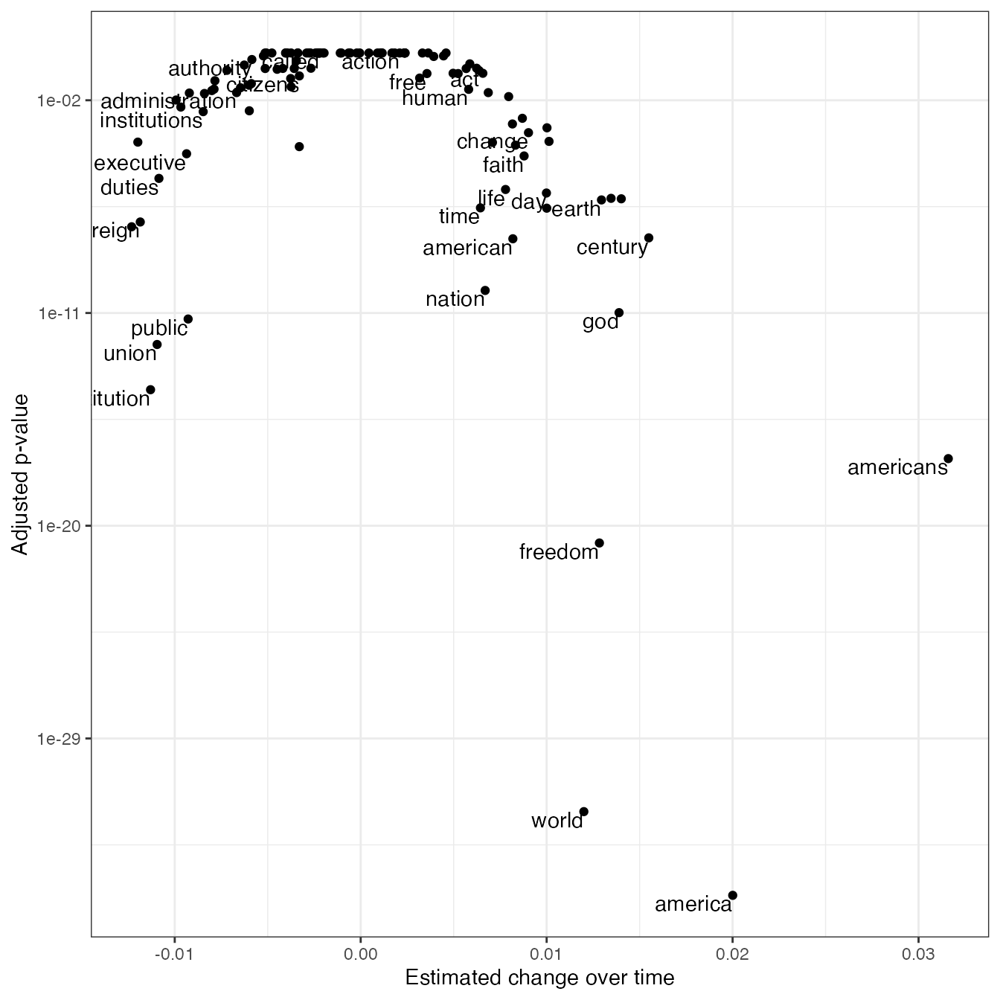
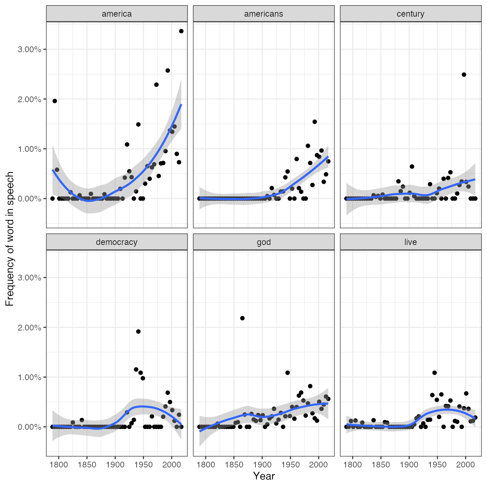

vignettes/tidying_casting.Rmd
tidying_casting.RmdMany existing text mining datasets are in the form of a DocumentTermMatrix class (from the tm package). For example, consider the corpus of 2246 Associated Press articles from the topicmodels package:
## <<DocumentTermMatrix (documents: 2246, terms: 10473)>>
## Non-/sparse entries: 302031/23220327
## Sparsity : 99%
## Maximal term length: 18
## Weighting : term frequency (tf)If we want to analyze this with tidy tools, we need to turn it into a one-term-per-document-per-row data frame first. The tidy function does this. (For more on the tidy verb, see the broom package).
Just as shown in this vignette, having the text in this format is convenient for analysis with the tidytext package. For example, you can perform sentiment analysis on these newspaper articles.
## # A tibble: 30,094 x 4
## document term count sentiment
## <int> <chr> <dbl> <chr>
## 1 1 assault 1 negative
## 2 1 complex 1 negative
## 3 1 death 1 negative
## 4 1 died 1 negative
## 5 1 good 2 positive
## 6 1 illness 1 negative
## 7 1 killed 2 negative
## 8 1 like 2 positive
## 9 1 liked 1 positive
## 10 1 miracle 1 positive
## # … with 30,084 more rowsWe can find the most negative documents:
library(tidyr)
ap_sentiments %>%
count(document, sentiment, wt = count) %>%
spread(sentiment, n, fill = 0) %>%
mutate(sentiment = positive - negative) %>%
arrange(sentiment)## # A tibble: 2,190 x 4
## document negative positive sentiment
## <int> <dbl> <dbl> <dbl>
## 1 1251 54 6 -48
## 2 1380 53 5 -48
## 3 531 51 9 -42
## 4 43 45 11 -34
## 5 1263 44 10 -34
## 6 2178 40 6 -34
## 7 334 45 12 -33
## 8 1664 38 5 -33
## 9 2147 47 14 -33
## 10 516 38 6 -32
## # … with 2,180 more rowsOr visualize which words contributed to positive and negative sentiment:
library(ggplot2)
ap_sentiments %>%
count(sentiment, term, wt = count) %>%
filter(n >= 150) %>%
mutate(n = ifelse(sentiment == "negative", -n, n)) %>%
mutate(term = reorder(term, n)) %>%
ggplot(aes(term, n, fill = sentiment)) +
geom_bar(stat = "identity") +
theme(axis.text.x = element_text(angle = 90, hjust = 1)) +
ylab("Contribution to sentiment")
Note that a tidier is also available for the dfm class from the quanteda package:
library(methods)
data("data_corpus_inaugural", package = "quanteda")
d <- quanteda::dfm(data_corpus_inaugural, verbose = FALSE)
d## Document-feature matrix of: 58 documents, 9,399 features (91.8% sparse) and 4 docvars.
## features
## docs fellow-citizens of the senate and house representatives :
## 1789-Washington 1 71 116 1 48 2 2 1
## 1793-Washington 0 11 13 0 2 0 0 1
## 1797-Adams 3 140 163 1 130 0 2 0
## 1801-Jefferson 2 104 130 0 81 0 0 1
## 1805-Jefferson 0 101 143 0 93 0 0 0
## 1809-Madison 1 69 104 0 43 0 0 0
## features
## docs among vicissitudes
## 1789-Washington 1 1
## 1793-Washington 0 0
## 1797-Adams 4 0
## 1801-Jefferson 1 0
## 1805-Jefferson 7 0
## 1809-Madison 0 0
## [ reached max_ndoc ... 52 more documents, reached max_nfeat ... 9,389 more features ]## # A tibble: 44,735 x 3
## document term count
## <chr> <chr> <dbl>
## 1 1789-Washington fellow-citizens 1
## 2 1797-Adams fellow-citizens 3
## 3 1801-Jefferson fellow-citizens 2
## 4 1809-Madison fellow-citizens 1
## 5 1813-Madison fellow-citizens 1
## 6 1817-Monroe fellow-citizens 5
## 7 1821-Monroe fellow-citizens 1
## 8 1841-Harrison fellow-citizens 11
## 9 1845-Polk fellow-citizens 1
## 10 1849-Taylor fellow-citizens 1
## # … with 44,725 more rowsSome existing text mining tools or algorithms work only on sparse document-term matrices. Therefore, tidytext provides cast_ verbs for converting from a tidy form to these matrices.
## # A tibble: 302,031 x 3
## document term count
## <int> <chr> <dbl>
## 1 1 adding 1
## 2 1 adult 2
## 3 1 ago 1
## 4 1 alcohol 1
## 5 1 allegedly 1
## 6 1 allen 1
## 7 1 apparently 2
## 8 1 appeared 1
## 9 1 arrested 1
## 10 1 assault 1
## # … with 302,021 more rows## <<DocumentTermMatrix (documents: 2246, terms: 10473)>>
## Non-/sparse entries: 302031/23220327
## Sparsity : 99%
## Maximal term length: 18
## Weighting : term frequency (tf)## <<TermDocumentMatrix (terms: 10473, documents: 2246)>>
## Non-/sparse entries: 302031/23220327
## Sparsity : 99%
## Maximal term length: 18
## Weighting : term frequency (tf)## Document-feature matrix of: 10,473 documents, 2,246 features (98.7% sparse).
## features
## docs 1 2 3 4 5 6 7 8 9 10
## adding 1 0 0 0 0 0 0 0 0 0
## adult 2 0 0 0 0 0 0 0 0 0
## ago 1 0 1 3 0 2 0 0 0 0
## alcohol 1 0 0 0 0 0 0 0 0 0
## allegedly 1 0 0 0 0 0 0 0 0 0
## allen 1 0 0 0 0 0 0 0 0 0
## [ reached max_ndoc ... 10,467 more documents, reached max_nfeat ... 2,236 more features ]## [1] "dgCMatrix"
## attr(,"package")
## [1] "Matrix"## [1] 2246 10473This allows for easy reading, filtering, and processing to be done using dplyr and other tidy tools, after which the data can be converted into a document-term matrix for machine learning applications.
You can also tidy Corpus objects from the tm package. For example, consider a Corpus containing 20 documents, one for each
reut21578 <- system.file("texts", "crude", package = "tm")
reuters <- VCorpus(DirSource(reut21578),
readerControl = list(reader = readReut21578XMLasPlain))
reuters## <<VCorpus>>
## Metadata: corpus specific: 0, document level (indexed): 0
## Content: documents: 20The tidy verb creates a table with one row per document:
## # A tibble: 20 x 17
## author datetimestamp description heading id language origin topics
## <chr> <dttm> <chr> <chr> <chr> <chr> <chr> <chr>
## 1 <NA> 1987-02-26 17:00:56 "" DIAMON… 127 en Reute… YES
## 2 BY TE… 1987-02-26 17:34:11 "" OPEC M… 144 en Reute… YES
## 3 <NA> 1987-02-26 18:18:00 "" TEXACO… 191 en Reute… YES
## 4 <NA> 1987-02-26 18:21:01 "" MARATH… 194 en Reute… YES
## 5 <NA> 1987-02-26 19:00:57 "" HOUSTO… 211 en Reute… YES
## 6 <NA> 1987-03-01 03:25:46 "" KUWAIT… 236 en Reute… YES
## 7 By Je… 1987-03-01 03:39:14 "" INDONE… 237 en Reute… YES
## 8 <NA> 1987-03-01 05:27:27 "" SAUDI … 242 en Reute… YES
## 9 <NA> 1987-03-01 08:22:30 "" QATAR … 246 en Reute… YES
## 10 <NA> 1987-03-01 18:31:44 "" SAUDI … 248 en Reute… YES
## 11 <NA> 1987-03-02 01:05:49 "" SAUDI … 273 en Reute… YES
## 12 <NA> 1987-03-02 07:39:23 "" GULF A… 349 en Reute… YES
## 13 <NA> 1987-03-02 07:43:22 "" SAUDI … 352 en Reute… YES
## 14 <NA> 1987-03-02 07:43:41 "" KUWAIT… 353 en Reute… YES
## 15 <NA> 1987-03-02 08:25:42 "" PHILAD… 368 en Reute… YES
## 16 <NA> 1987-03-02 11:20:05 "" STUDY … 489 en Reute… YES
## 17 <NA> 1987-03-02 11:28:26 "" STUDY … 502 en Reute… YES
## 18 <NA> 1987-03-02 12:13:46 "" UNOCAL… 543 en Reute… YES
## 19 By BE… 1987-03-02 14:38:34 "" NYMEX … 704 en Reute… YES
## 20 <NA> 1987-03-02 14:49:06 "" ARGENT… 708 en Reute… YES
## # … with 9 more variables: lewissplit <chr>, cgisplit <chr>, oldid <chr>,
## # topics_cat <named list>, places <named list>, people <chr>, orgs <chr>,
## # exchanges <chr>, text <chr>Similarly, you can tidy a corpus object from the quanteda package:
## Corpus consisting of 58 documents and 4 docvars.
## 1789-Washington :
## "Fellow-Citizens of the Senate and of the House of Representa..."
##
## 1793-Washington :
## "Fellow citizens, I am again called upon by the voice of my c..."
##
## 1797-Adams :
## "When it was first perceived, in early times, that no middle ..."
##
## 1801-Jefferson :
## "Friends and Fellow Citizens: Called upon to undertake the du..."
##
## 1805-Jefferson :
## "Proceeding, fellow citizens, to that qualification which the..."
##
## 1809-Madison :
## "Unwilling to depart from examples of the most revered author..."
##
## [ reached max_ndoc ... 52 more documents ]## # A tibble: 58 x 5
## text Year President FirstName Party
## <chr> <int> <chr> <chr> <fct>
## 1 "Fellow-Citizens of the Senate and o… 1789 Washington George none
## 2 "Fellow citizens, I am again called … 1793 Washington George none
## 3 "When it was first perceived, in ear… 1797 Adams John Federalist
## 4 "Friends and Fellow Citizens:\n\nCal… 1801 Jefferson Thomas Democratic-…
## 5 "Proceeding, fellow citizens, to tha… 1805 Jefferson Thomas Democratic-…
## 6 "Unwilling to depart from examples o… 1809 Madison James Democratic-…
## 7 "About to add the solemnity of an oa… 1813 Madison James Democratic-…
## 8 "I should be destitute of feeling if… 1817 Monroe James Democratic-…
## 9 "Fellow citizens, I shall not attemp… 1821 Monroe James Democratic-…
## 10 "In compliance with an usage coeval … 1825 Adams John Qui… Democratic-…
## # … with 48 more rowsThis lets us work with tidy tools like unnest_tokens to analyze the text alongside the metadata.
## # A tibble: 50,156 x 5
## Year President FirstName Party word
## <int> <chr> <chr> <fct> <chr>
## 1 1789 Washington George none fellow
## 2 1789 Washington George none citizens
## 3 1789 Washington George none senate
## 4 1789 Washington George none house
## 5 1789 Washington George none representatives
## 6 1789 Washington George none vicissitudes
## 7 1789 Washington George none incident
## 8 1789 Washington George none life
## 9 1789 Washington George none event
## 10 1789 Washington George none filled
## # … with 50,146 more rowsWe could then, for example, see how the appearance of a word changes over time:
inaug_freq <- inaug_words %>%
count(Year, word) %>%
complete(Year, word, fill = list(n = 0)) %>%
group_by(Year) %>%
mutate(year_total = sum(n),
percent = n / year_total) %>%
ungroup()
inaug_freq## # A tibble: 501,990 x 5
## Year word n year_total percent
## <int> <chr> <dbl> <dbl> <dbl>
## 1 1789 1 0 529 0
## 2 1789 1,000 0 529 0
## 3 1789 100 0 529 0
## 4 1789 100,000,000 0 529 0
## 5 1789 120,000,000 0 529 0
## 6 1789 125 0 529 0
## 7 1789 13 0 529 0
## 8 1789 14th 1 529 0.00189
## 9 1789 15th 0 529 0
## 10 1789 16 0 529 0
## # … with 501,980 more rowsFor example, we can use the broom package to perform logistic regression on each word.
library(broom)
models <- inaug_freq %>%
group_by(word) %>%
filter(sum(n) > 50) %>%
do(tidy(glm(cbind(n, year_total - n) ~ Year, .,
family = "binomial"))) %>%
ungroup() %>%
filter(term == "Year")
models## # A tibble: 114 x 6
## word term estimate std.error statistic p.value
## <chr> <chr> <dbl> <dbl> <dbl> <dbl>
## 1 act Year 0.00636 0.00215 2.96 3.10e- 3
## 2 action Year 0.00209 0.00190 1.10 2.71e- 1
## 3 administration Year -0.00667 0.00184 -3.63 2.84e- 4
## 4 america Year 0.0200 0.00154 13.0 2.02e-38
## 5 american Year 0.00818 0.00127 6.43 1.32e-10
## 6 americans Year 0.0316 0.00346 9.14 6.22e-20
## 7 authority Year -0.00585 0.00232 -2.53 1.15e- 2
## 8 business Year 0.00332 0.00199 1.67 9.48e- 2
## 9 called Year -0.00222 0.00207 -1.07 2.83e- 1
## 10 century Year 0.0155 0.00242 6.41 1.45e-10
## # … with 104 more rows## # A tibble: 114 x 6
## word term estimate std.error statistic p.value
## <chr> <chr> <dbl> <dbl> <dbl> <dbl>
## 1 americans Year 0.0316 0.00346 9.14 6.22e-20
## 2 america Year 0.0200 0.00154 13.0 2.02e-38
## 3 century Year 0.0155 0.00242 6.41 1.45e-10
## 4 live Year 0.0140 0.00242 5.79 6.92e- 9
## 5 god Year 0.0139 0.00187 7.45 9.67e-14
## 6 democracy Year 0.0135 0.00233 5.78 7.31e- 9
## 7 earth Year 0.0129 0.00223 5.81 6.13e- 9
## 8 freedom Year 0.0128 0.00128 9.99 1.66e-23
## 9 powers Year -0.0123 0.00197 -6.24 4.32e-10
## 10 world Year 0.0120 0.000974 12.3 7.10e-35
## # … with 104 more rowsYou can show these models as a volcano plot, which compares the effect size with the significance:
library(ggplot2)
models %>%
mutate(adjusted.p.value = p.adjust(p.value)) %>%
ggplot(aes(estimate, adjusted.p.value)) +
geom_point() +
scale_y_log10() +
geom_text(aes(label = word), vjust = 1, hjust = 1,
check_overlap = TRUE) +
xlab("Estimated change over time") +
ylab("Adjusted p-value")
We can also use the ggplot2 package to display the top 6 terms that have changed in frequency over time.
library(scales)
models %>%
top_n(6, abs(estimate)) %>%
inner_join(inaug_freq) %>%
ggplot(aes(Year, percent)) +
geom_point() +
geom_smooth() +
facet_wrap(~ word) +
scale_y_continuous(labels = percent_format()) +
ylab("Frequency of word in speech")